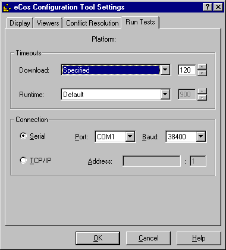
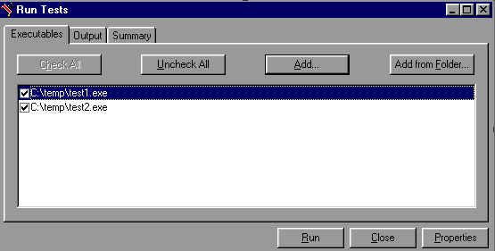
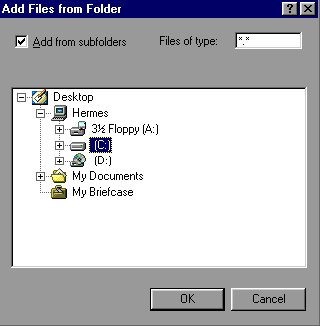

|
Execution |
||
Test executables that
have been linked using the Build/Tests operation against the current
configuration can be executed by selecting Tools
 Run Tests.
Run Tests.
PLEASE NOTE: this functionality is not yet implemented.
When tests are run, the
Configuration Tool looks for a platform name corresponding to the
currently loaded hardware template. If no such platform is found, a
dialog will be displayed for you to define one; this dialog is
similar to that displayed by the Add function in the Tools Platforms
dialog, but in this case the platform name cannot be changed.
Platforms
dialog, but in this case the platform name cannot be changed.
When a test run is invoked, a property sheet is displayed, comprising three tabs: Executables, Output and Summary.
Note that the property sheet is resizable.
Three buttons appear on the property sheet itself: Run/Stop, Close and Properties.
The Run button is used to initiate a test run. Those tests selected on the Executables tab are run, and the output recorded on the Output and Summary tabs. During the course of a run, the Run button changes to "Stop". The button may be used to interrupt a test run at any point.
The Run Tests settings
dialog can be invoked using the Properties button on the Run Tests
dialog, or by selecting the View Settings
menu and choosing the Run Tests tab. This dialog allows you choose
connectivity settings.
Settings
menu and choosing the Run Tests tab. This dialog allows you choose
connectivity settings.

This group of controls serves to set the maximum time that is allowed for downloading a test to the target board. If the time is exceeded, the test will be deemed to have failed for reason of "Download Timeout" and the execution of that particular test will be abandoned. This option only applies to tests run on hardware, not to those executed in a simulator. Times are in units of elapsed seconds.
Three options are available using the drop-down list:
Calculated from file size - an estimate of the maximum time required for download is made using the (stripped) executable size and the currently used baud rate
Specified - a user-specified value may be entered in the adjacent edit box
This group of controls serves to set the maximum time that is allowed for executing a test on the target board or in a simulator. If the time is exceeded, the test will be deemed to have failed for reason of "Timeout" and the execution of that particular test will be abandoned. In the case of hardware, the time is measured in elapsed seconds: in the case of a simulator it is in CPU seconds.
Three options are available using the drop-down list:
The Connection controls may be used to specify how the target board is to be accessed:
If the target board is connected using a serial cable, the Serial radio button should be checked. In this case you can select a port (COM1, COM2, ...) and an appropriate baud rate using drop-list boxes.
If the target board is accessed remotely using GDB remote protocol, the "TCP/IP" radio button should be checked. In this case you can select a host name and TCP/IP port number using edit boxes.
This is used to adjust the set of tests available for execution. A check box against each executable name indicates whether that executable will be included when the Run button is pressed. The Check All and Uncheck All buttons may be used to check or uncheck all items.
When the property sheet is first displayed, it will be pre-populated with those test executables that have been linked using the Build/Tests operation against the current configuration.

You can right-click in the window to display a context menu containing Add and Remove items. Clicking Remove will remove those executables selected. Clicking Add will display a dialog box that allows you to add to the set of items. Equivalently the Add button may be used to add executables, and the DEL key may be used to remove them.
You can use the Add from Folder button to add a number of executables in a specified folder (optionally including subfolders).

The "Add from subfolders" check box should be checked if you wish the search for executables to descend into subfolders (in the example above the whole of the C drive would be searched).
The "Files of type" edit box should be used to specify the extension of those files to be matched [for example, "*.exe"].
This tab is used to display the output from running tests. The output can be saved to a file or cleared by means of the popup menu displayed when you right-click in the window.
This tab is used to display a record, in summary form, of those tests executed. For each execution, the following information is displayed:
Host - the host name of the machine from which the test was downloaded
Executable - the executable (file name) of the test executed
Status - the result of executing the test. This will be one of the following:
Download - the download time [mm:ss/mm:ss] used. The first of the two times displayed represents the actual time used: the second the limit time.
Execution - the execution time [mm:ss/mm:ss] used. The first of the two times displayed represents the actual time used: the second the limit time.
The output can be saved to a file or cleared by means of the popup menu displayed when you right-click in the window.
|
Execution |
||